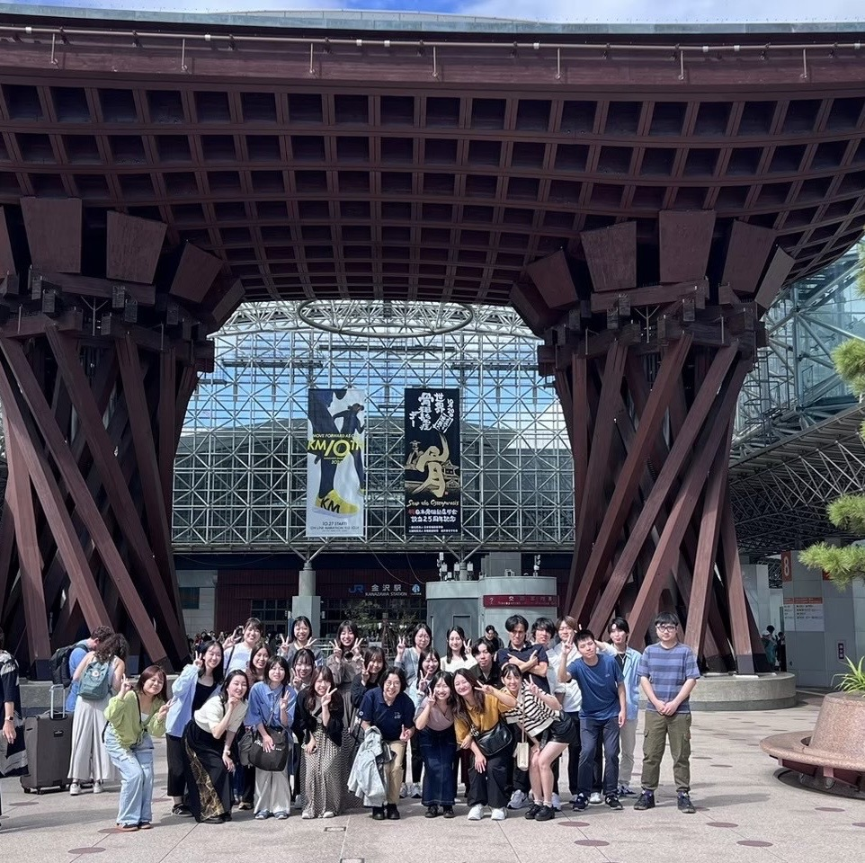

山田ゼミ 1年間のスケジュール
4月 ゼミ生歓迎会
新年度の始まりと共に新しいゼミ生を迎える歓迎会を行います
毎年、ドローンを用いたゲームを行い3,4回生の交流を行います。 ドローンの操作方法まで4回生が3回生に指導を行いながらゲームを行います。
毎年、ドローンを用いたゲームを行い3,4回生の交流を行います。 ドローンの操作方法まで4回生が3回生に指導を行いながらゲームを行います。

5月 プロジェクト勧誘、研究テーマの決定
初回の全体ゼミでは、4回生を中心にドローン班やプログラミング班などのグループは今年のプロジェクト内容を発表します。
また、個人研究で進めていく人たちも論文の研究内容を発表します。3回生にとって、初回の全体ゼミはプロジェクトに参加する検討機会や、
個人研究の参考になります。
[これまでの研究例はここから]

7月 研究過程の中間報告
夏休み前に行った研究の進捗を報告します。
また、夏休み中の研究予定や今後の予定を発表し
夏休み中に行う研究の予定を立てます
また、夏休み中の研究予定や今後の予定を発表し
夏休み中に行う研究の予定を立てます

9月 夏休み明けの研究の進捗報告
夏休み中までに進めた研究の進捗を報告します。
また、秋学期からの予定を立てて論文執筆までの
スケージュールを提示します。
また、秋学期からの予定を立てて論文執筆までの
スケージュールを提示します。


11月 リサーチフェア
毎年、任意でリサーチフェアに出場します。
リサーチフェアの出場によってプレゼンテーション能力や
質疑応答に対する適応力が身に付きます。
リサーチフェアの出場によってプレゼンテーション能力や
質疑応答に対する適応力が身に付きます。

11月 論文執筆開始
これまでの研究成果をもとに論文を執筆していきます。
ゼミ生同士で添削を行ったり、先生からの指導を受けながら
論文の執筆や手直しを行っていきます。
ゼミ生同士で添削を行ったり、先生からの指導を受けながら
論文の執筆や手直しを行っていきます。

12月 企業見学
時期は毎年異なりますが、ゼミとして企業見学に行きます。